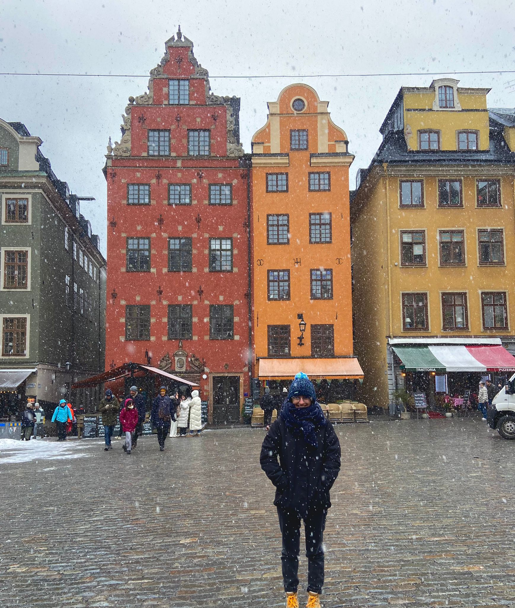

Mi nombre es Patricia García Fernández y vivo en Oviedo, Asturias. Mi UO es UO282210, por lo que mi correo profesional es uo282210@uniovi.es mientras que mi correo personal es patriciagarfer16@gmail.com.
A nivel universitario estudio Ingeniería Informática del Software. Actualmente estoy en mi último año de carrera y planeo hacer un máster de Project Management, idealmente en Suecia, el próximo curso.
Aficiones
Aunque tengo muchas aficiones, las cinco que destacaría son las siguientes enumeradas.
Piano. He estudiado música durante 10 años y tengo el título de Técnico de las Enseñanzas de Música en la especialidad de Piano por el Conservatorio Profesional de Música de Oviedo. Aunque ya he acabado el grado, suelo tocar el piano todas las semanas.
Escuchar música. Suelo escuchar diversos géneros musicales aunque uno de mis favoritos puede que sea el MoTown.
Lectura. Desgraciadamente tengo un imán para las trilogías o sagas largas de libros, por lo que he desarrollado la habilidad de leer varios libros a la vez. De otra manera, no podría variar el género literario. Entre mis favoritos están las novelas con trasfondo histórico, con trasfondo mitológico y libros de Ciencia Ficción y Magia.
Viajar. En los últimos años he desarrollado un interés por viajar y conocer culturas, sociedades y costumbres diferentes. A raíz de un viaje a Suecia me ha empezado a atraer mucho la cultura nórdica y por ello planeo realizar mis estudios de Máster allí.
Deporte. Desde que era pequeña siempre me ha gustado mucho el deporte, como el fútbol, la natación o el buceo. Suelo ir a la piscina todas las semanas y jugar pachangas con amigos de vez en cuando. En mi opinión, son una muy buena forma de desconectar.

Cantantes y grupos favoritos
Como dije anteriormente, escucho una gran variedad de géneros musicales por lo que tengo varios cantantes y grupos favoritos. Algunos de ellos son los siguientes.
Cantantes.
Aretha Franklin
Kanye West
Bad Gyal
Mac Miller
Rick Astley
Grupos musicales.
ABBA
Mecano
Queen
Leiva
Asignaturas favoritas
En todo lo que llevo de grado, hay algunas asignaturas que puedo destacar como favoritas o más interesantes. Algunas de ellas son las aquí definidas
Dirección y Planificación de Proyectos Informáticos
Perteneciente a la materia de Práctica Profesional. Trata conceptos relativos a la dirección y planificación de proyectos como la gestión de RR.HH, costes, riesgos o calidad.
Arquitectura del Software
Perteneciente a la materia Ingeniería del Software. Los contenidos teóricos ahondan en los conceptos, tipos y validación de Arquitecturas del software, mientras que los prácticos están enfocados al desarrollo web utilizando tecnología descentralizada.
Ingeniería del Proceso Software
Perteneciente a la materia de Ingeniería del Software. Trata conceptos y metodologías como el Scrum, Proceso unificado y Técnicas de análisis de casos de uso y prototipados de interfaz.
Computabilidad
Perteneciente a la materia Fundamentos Informáticos. Sus contenidos son la Lógica de Proposiciones y de Predicados, Modelos de Computación y Funciones Computables, y Resultados Fundamentales y Resolubilidad de Problemas.
Autómatas y Matemáticas Discretas
Perteneciente a la materia Fundamentos Informáticos. Se tratan los Lenguajes Regulares y Libres de Contexto, Grafos y Lenguajes REcursivos y Recursivamente Enumerables.
Temperaturas en Oviedo
Temperaturas medias anuales en Oviedo según Clima Oviedo